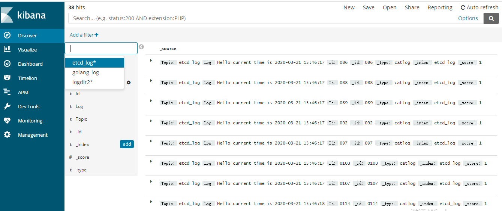

前情回顾
前文我们完成了kafka消费逻辑实现，并将消息放入elasticsearch，然后通过kibana可视化工具查看我们的日志。
本节目标
前文只是完成了kafka消息消费以及放入elastic，这次将项目完善，使其支持热更新，就是当config.yaml中监控的日志改变，或者etcd数据有改变时，动态启动协程监控新增日志，关闭取消的日志监控协程。
新增变量控制协程自启动
kafkaconsumer.go中新增如下代码1
2
3
4
5
6
7
8
9
10
11
12
13
14
15
16
17
18var topicMap map[string]map[int32]*TopicData
var topicSet map[string]bool
var etcd_topicSet map[string]bool
var etcd_topicMap map[string]map[int32]*TopicData
var topicChan chan *TopicPart
var etcd_topicChan chan *TopicPart
var consumer_list []sarama.Consumer
var etcdcli *clientv3.Client
func init() {
topicMap = make(map[string]map[int32]*TopicData)
etcd_topicMap = make(map[string]map[int32]*TopicData)
topicSet = make(map[string]bool)
etcd_topicSet = make(map[string]bool)
topicChan = make(chan *TopicPart, 20)
etcd_topicChan = make(chan *TopicPart, 20)
consumer_list = make([]sarama.Consumer, 0, 20)
}
topicMap用来存储config.yaml中直接记录的日志topic以及协程参数，etcd_topicMap用来记录etcd中记录的topic以及协程参数。
topicSet用来记录config.yaml中直接记录的日志topic, etcd_topicSet用来记录etcd中记录的topic。
topicChan当监控日志写入elastic的协程异常崩溃时，通过该chan返回topic信息，然后我们通过topicMap找到topic对应的协程重启。
etcd_topicChan协程根据etcd的保存的topic，监控etlastic处理，如果该协程崩溃，则通过etcd_topicMap中查找topic对应的协程重启。
consumer_list保存了kafka消费者列表。
etcdcli时etcd的客户端，用来处理etcd读写。
根据config中配置的日志topic生成set
1 | func ConstructTopicSet() map[string]bool { |
根据config中配置的etcd键值获取val，然后获取topic生成set
etcdconsumer.go中通过GetTopicSet从etcd中读取topic生生set1
2
3
4
5
6
7
8
9
10
11
12
13
14
15
16
17
18
19
20
21
22
23
24
25
26
27
28
29
30
31
32
33
34
35
36func GetTopicSet(cli *clientv3.Client) (interface{}, error) {
etcdKeys, etcdres := logconfig.ReadConfig(logconfig.InitVipper(), "etcdkeys")
if !etcdres {
fmt.Println("read config etcdkeys failed")
return nil, errors.New("read config etcdkeys failed")
}
fmt.Println(reflect.TypeOf(etcdKeys))
topicSet := make(map[string]bool)
for _, keyval := range etcdKeys.([]interface{}) {
ctxtime, cancel := context.WithTimeout(context.Background(), time.Second)
resp, err := cli.Get(ctxtime, keyval.(string))
cancel()
if err != nil {
fmt.Println("get failed, err:", err)
continue
}
for _, ev := range resp.Kvs {
fmt.Printf("%s : %s ...\n", ev.Key, ev.Value)
etcdLogConf := make([]*etcdlogconf.EtcdLogConf, 0, 20)
unmarsherr := json.Unmarshal(ev.Value, &etcdLogConf)
if unmarsherr != nil {
fmt.Println("unmarshal error !, error is ", unmarsherr)
continue
}
for _, etcdval := range etcdLogConf {
topicSet[etcdval.Topic] = true
}
}
}
return topicSet, nil
}
将集合转化为map，并配置协程然后启动
1 | func ConvertSet2Map(consumer sarama.Consumer, topicSet map[string]bool, |
从kafka中读取消息，并调用上面的函数启动协程监控es
从kafka中读取信息，然后根据配置生成set和map，启动协程监控es1
2
3
4
5
6
7
8
9
10
11
12
13
14
15
16
17
18
19
20
21
22
23
24
25
26
27
28
29
30
31
32
33
34
35
36
37
38
39
40
41
42
43
44
45
46
47
48
49
50
51
52
53
54
55
56
57
58
59
60
61
62
63
64
65
66
67
68
69
70
71
72
73
74
75
76
77
78
79
80
81
82
83
84func ConsumeTopic(consumer sarama.Consumer) {
ConvertSet2Map(consumer, topicSet, topicMap, topicChan)
ConvertSet2Map(consumer, etcd_topicSet, etcd_topicMap, etcd_topicChan)
//监听配置文件
ctx, cancel := context.WithCancel(context.Background())
pathChan := make(chan interface{})
etcdChan := make(chan interface{})
go logconfig.WatchConfig(ctx, logconfig.InitVipper(), pathChan, etcdChan)
defer func(cancel context.CancelFunc) {
consumer_once.Do(func() {
if err := recover(); err != nil {
fmt.Println("consumer main goroutine panic, ", err)
}
cancel()
})
}(cancel)
for {
select {
//检测监控路径的协程崩溃，重启
case topicpart := <-topicChan:
fmt.Printf("receive goroutine exited, topic is %s, partition is %d\n",
topicpart.Topic, topicpart.Partition)
//重启消费者读取数据的协程
val, ok := topicMap[topicpart.Topic]
if !ok {
continue
}
tp, ok := val[topicpart.Partition]
if !ok {
continue
}
tp.Ctx, tp.Cancel = context.WithCancel(context.Background())
go PutIntoES(tp, topicChan)
//检测etcd配置解析后，监控路径的协程崩溃，重启
case topicpart := <-etcd_topicChan:
fmt.Printf("receive goroutine exited, topic is %s, partition is %d\n",
topicpart.Topic, topicpart.Partition)
//重启消费者读取数据的协程
val, ok := etcd_topicMap[topicpart.Topic]
if !ok {
continue
}
tp, ok := val[topicpart.Partition]
if !ok {
continue
}
tp.Ctx, tp.Cancel = context.WithCancel(context.Background())
go PutIntoES(tp, etcd_topicChan)
//检测vipper监控返回配置的更新
case pathchange, ok := <-pathChan:
if !ok {
fmt.Println("vipper watch goroutine exited")
goto LOOPEND
}
//fmt.Println(pathchange)
topicSetTemp := make(map[string]bool)
for _, chval := range pathchange.([]interface{}) {
for logkey, logval := range chval.(map[interface{}]interface{}) {
if logkey.(string) == "logtopic" {
topicSetTemp[logval.(string)] = true
}
}
}
UpdateTopicLogRoutine(topicSetTemp)
//fmt.Println(topicSetTemp)
case etcdchange, ok := <-etcdChan:
if !ok {
fmt.Println("vipper watch goroutine extied")
goto LOOPEND
}
fmt.Println(etcdchange)
topicsetTemp, err := etcdconsumer.GetTopicSet(etcdcli)
if err != nil {
continue
}
UpdateEtcdTopicLogRoutine(topicsetTemp.(map[string]bool))
}
}
LOOPEND:
fmt.Printf("for exited ")
}
go logconfig.WatchConfig 启动协程，调用vipper监控配置，当配置有更新时消费者协程处理更新的topic。
同时支持子协程异常崩溃时，消费者协程重启该协程。
通过kibana看到的日志信息
kibana中ManageMent管理，然后新增index，elastic的index我们设置的是topic，所以我们新建几个index,
etcd_log, golang_log, logdir2。
然后kibana中可以看到这几个index的日志信息了

源码下载
https://github.com/secondtonone1/golang-/tree/master/logcatchsys
感谢关注我的公众号